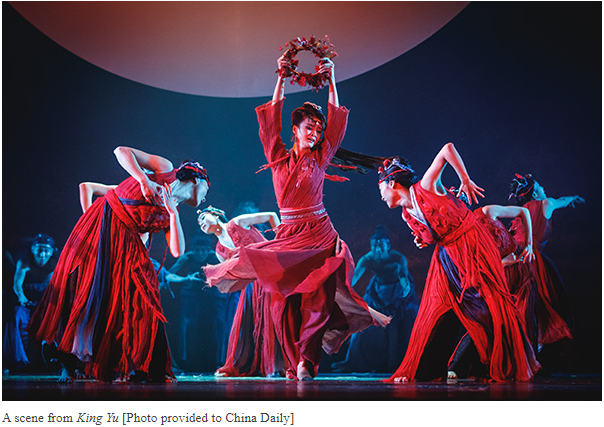

Dive Into Traditional Arts:
Starters
Traditional arts encompass a wide range of artistic practices that have been
developed and preserved over generations within specific cultures and communities.
These art forms often reflect the history, values, beliefs, and
customs of the societies from which they originate.
Here's a brief overview of some common types of traditional arts:
Visual Arts
Painting: Traditional painting styles vary greatly
across different cultures and may include techniques such as watercolor,
oil painting, ink wash painting, and folk art.
Sculpture: Traditional sculpture can encompass a variety of materials, including wood,
stone, clay, metal, and more. Sculptures may depict religious figures, mythological
beings, historical events, or everyday life.
Textiles: Textile arts include techniques such as weaving, embroidery, quilting, and batik. Traditional
textile designs often feature intricate patterns and motifs that are culturally significant.
Performing Arts
Music: Traditional music encompasses a wide range of genres and instruments, including folk songs,
classical music, ceremonial music, and indigenous music.

Dance: Traditional dance forms vary greatly from culture to culture and
may be performed for ceremonial, religious, social, or entertainment purposes.
Theater: Traditional theater includes forms such as puppetry, mask performances, shadow theater, and
storytelling. These performances often convey cultural narratives, myths, and moral teachings.
Crafts

Pottery and Ceramics: Traditional pottery and ceramics are
crafted using techniques such as hand-building, wheel-throwing, and glazing.
Woodworking:Traditional woodworking includes techniques such as carving,
joinery, and turning to create furniture, utensils, sculptures, and architectural elements.
Metalworking:Traditional metalworking encompasses techniques such as
forging, casting, and engraving to create jewelry, tools, weapons, and decorative objects.
These are just a few examples of the diverse range of traditional arts found around the world.
Each art form carries with it a rich cultural heritage and provides insight into the lives
and identities of the people who create and cherish them.
The following lessons will focus mainly on drawing and painting.